おしらせメイト セットアップ手順書
デスクトップに常駐するマスコットが、Google カレンダー・Google Tasks・Gmail の通知を、アニメーション・効果音・読み上げで知らせるアプリです（Windows 11 専用）。
Google と連携するための「クライアント」は、開発者から受け取るか、自分の Google アカウントで作成して、アプリに読み込みます（開発者の資格情報はアプリに入っていません）。設定画面の案内に沿って進めれば、受け取った場合は 5 分、自分で作る場合は 30 分ほどです。
| 手順 | 内容 | 必要か |
|---|---|---|
| 1 | アプリの準備（zip を展開して起動） | 必須 |
| 2 | クライアントを受け取る（または Google Cloud で作る）。アプリに読み込んで連携 | 通知を使うなら必須 |
| 3 | VOICEVOX のインストール（読み上げ） | 任意 |
| 4 | Gemini API キーの取得（チャット「話しかける」） | 任意 |
1. アプリの準備（zip の展開）
インストーラーはありません。配布された zip（oshirase-mate-shared-x.y.z-win-x64.zip）を展開して、中の実行ファイルから起動します（管理者権限は不要です）。
-
（推奨）ブロックを解除する
zip を右クリック → プロパティ → 下の方の「セキュリティ：このファイルは他のコンピューターから取得したものです」の 許可する にチェックを入れて OK を押します。- こうしておくと、展開したファイルを実行するときの警告が出なくなります。GitHub の公式の Releases 以外から入手した zip では行わないでください。
-
展開する
zip を右クリック → すべて展開 で、置いておきたい場所（例：ドキュメント\おしらせメイト）に展開します。展開した後にフォルダを移動すると、自動起動が効かなくなります移動した場合は、設定画面の自動起動をいったんオフにしてからオンにし直してください。 -
起動する
展開したフォルダのおしらせメイト.exeをダブルクリックします。- 「Windows によって PC が保護されました」と表示された場合は、詳細情報 → 実行 を押します（このアプリはコード署名をしていないため）。
「スマート アプリ コントロールによって…ブロックされました」と表示された場合この PC では実行できません。スマート アプリ コントロールを無効にすると PC 全体の保護が弱まるため、この手順書では勧めません。 -
表示を確認する
マスコットが表示され、タスクトレイ（画面右下）にアイコンが出ます。- マスコットまたはトレイのアイコンを右クリックすると、メニュー（設定・キャラクター変更・ミュート・話しかける・終了）が開きます。Google との連携が切れた・切れそうなときは、いちばん上に Google と連携し直す… が出ます。
- Windows へのログイン時に自動で起動したい場合は、設定画面の Windowsにログインしたとき自動で起動する をオンにします。
- デスクトップやスタートメニューから起動したい場合は、設定画面の ショートカット 欄の 作成 を押します。以後はそのショートカットから起動できます（起動中にもう一度開くと設定画面が出ます）。展開したフォルダを移動したときは 作り直す を押してください。
削除（アンインストール）
自動起動をオンにしている場合は、先に設定画面でオフにします。ショートカットを作った場合は、設定画面の ショートカット 欄で 削除 を押します。そのうえでアプリを終了し、展開したフォルダを削除します。設定・連携情報・取り込んだキャラクターは %APPDATA%\おしらせメイト に残ります。完全に消したい場合はこのフォルダも削除してください。Google 側の連携も解除したい場合は、削除の前に設定画面で 連携解除 を押してください。
新しい版への更新
アプリを終了し、展開したフォルダの中身を新しい zip の中身で置き換えます（同じ場所に置けば自動起動の設定もそのまま使えます）。設定・連携情報は引き継がれます。
2. Google との連携
予定・TODO・メールを読むには、Google と連携するための「クライアント」（Client ID と Client Secret の組）をアプリに読み込んでから連携します（開発者の資格情報はアプリに入っていません）。クライアントの入手のしかたは 2 通りあります。
| 入手のしかた | かかる時間 | 連携の期限 |
|---|---|---|
| 2-A. 開発者から受け取る | 5 分ほど | 切れません |
| 2-B. 自分の Google アカウントで作る | 30 分ほど | 7 日で切れるので、そのたびに連携し直します（前日にマスコットがお知らせします） |
マスコットを右クリック → 設定 を開き、上の Google 連携 タブを開くと、A と B の手順が並んでいます（設定タブの 連携の準備を開く からも開けます）。
2-A. 開発者からクライアントを受け取った人
-
受け取った値を貼り付けて保存する
Google 連携 タブの A の手順 1 に、受け取った Client ID（〜.apps.googleusercontent.comで終わる値）と Client Secret を貼り付けて 保存 を押します。上の クライアント が 「読み込み済み（受け取ったもの）」 になれば OK です。- 1 回しか開けない URL で受け取った場合は、開いたらすぐに 2 つの値をコピーして貼り付けてください（閉じると二度と開けません）。
- JSON ファイル（
client_secret_〜.json）で受け取った場合は、手順 1 の ファイルを選ぶ で読み込みます。 - 値は暗号化してこの PC 内に保存されます。受け取った値は他人に見せないでください。
-
連携する
A の手順 2 の 連携する を押し、下の 「連携する」 のとおりに進めます。
連携する（A・B 共通）
- 連携する を押すとブラウザが開きます。通知を受け取りたいアカウントを選びます。
-
「Google hasn't verified this app（このアプリは Google で確認されていません）」と表示されたら、左下の 詳細 → （アプリ名）（安全ではないページ）に移動 を押します。
- 本文の中にも 詳細 がありますが、そちらは Google の説明のページへのリンクです。
- 開発者が審査を受けていない、少人数向けのアプリのため表示されます。
- 権限の確認画面では、すべての項目にチェックを入れて 続行 を押します（1つでも外すと連携できません）。いずれも読み取りだけの権限です。
- ブラウザに完了の表示が出たら閉じてかまいません。設定タブの Googleアカウント連携 欄が 「連携中」 になれば完了です。
2-B. 自分でクライアントを作る人
自分の Google アカウントで Google Cloud のプロジェクトとクライアントを作ります。Google 連携 タブの B の各手順の 開く を押すと、Google Cloud の該当ページが既定のブラウザで開きます。
手順 1-a. プロジェクトを作る
- B の手順 1-a の 開く を押します。「API の有効化ウィザード」の画面が出た場合は、プロジェクトの作成 を押します。
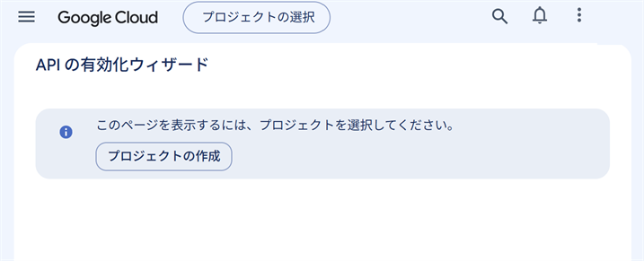
- プロジェクト名（例：
oshirase-mate）を入力して 作成 を押します。親リソースは「組織なし」のままでかまいません。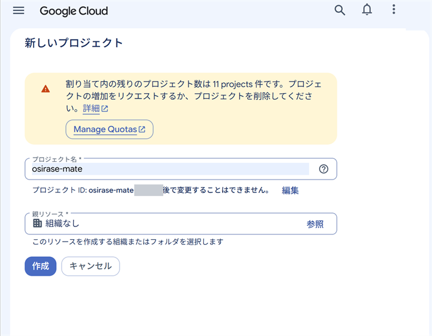
- 「割り当て内の残りのプロジェクト数は…」という黄色い表示は、作れる数が残っていれば気にしなくてかまいません。
- 「ようこそ」の画面になり、上に作ったプロジェクト名が表示されたら完了です（API の画面には戻りません）。次の手順 1-b へ進みます。
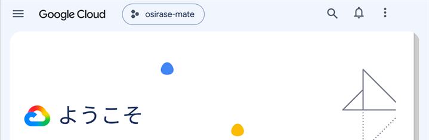
手順 1-b. 3 つの API を有効にする
- B の手順 1-b の 開く を押します。上に手順 1-a で作ったプロジェクト名が出ていることを確かめ、次へ を押します。
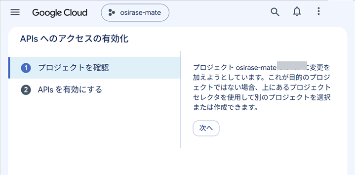
- Google Calendar API・Google Tasks API・Gmail API の 3 つが表示されていることを確かめ、有効にする を押します。
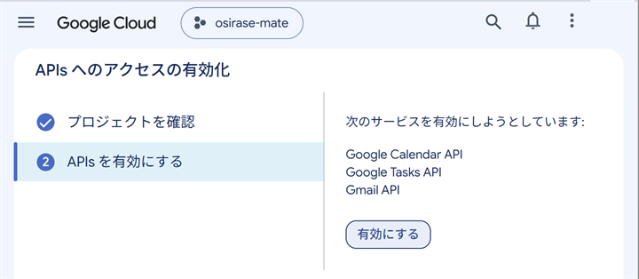
- 「以下が有効になりました」と表示されれば完了です。
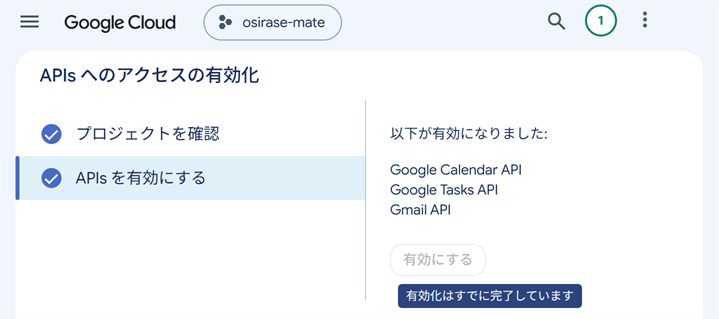
手順 2. Google Auth Platform を設定する
- B の手順 2 の 開く を押します。「Google Auth Platform はまだ構成されていません」と表示されたら 開始 を押します。
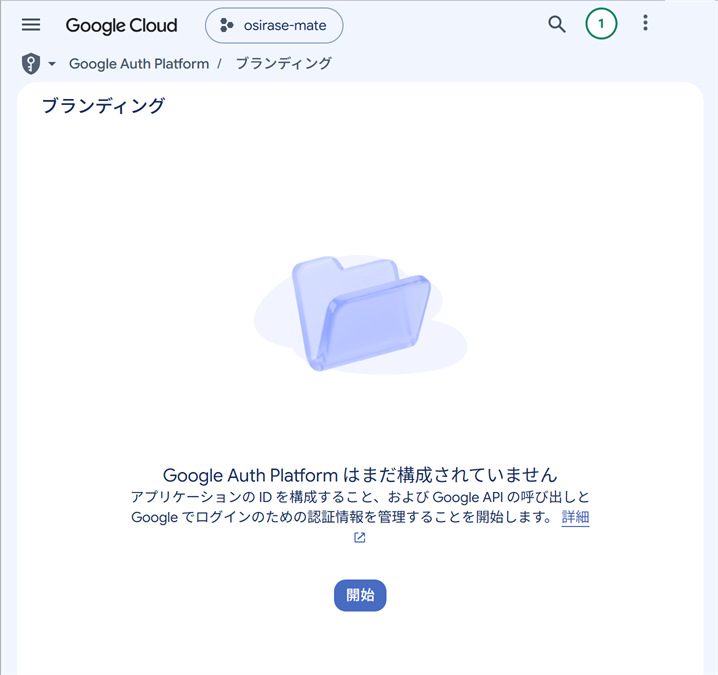
- アプリ情報：アプリ名（例：
おしらせメイト）を入力し、ユーザー サポートメールで自分のメールアドレスを選んで 次へ を押します。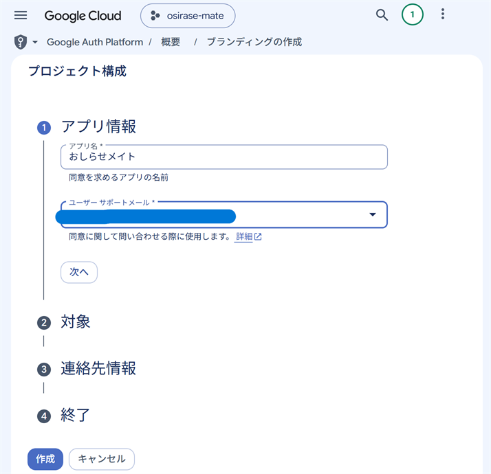
- 対象：「外部」 を選んで 次へ を押します（「アプリはテストモードで起動し…」と書かれています）。
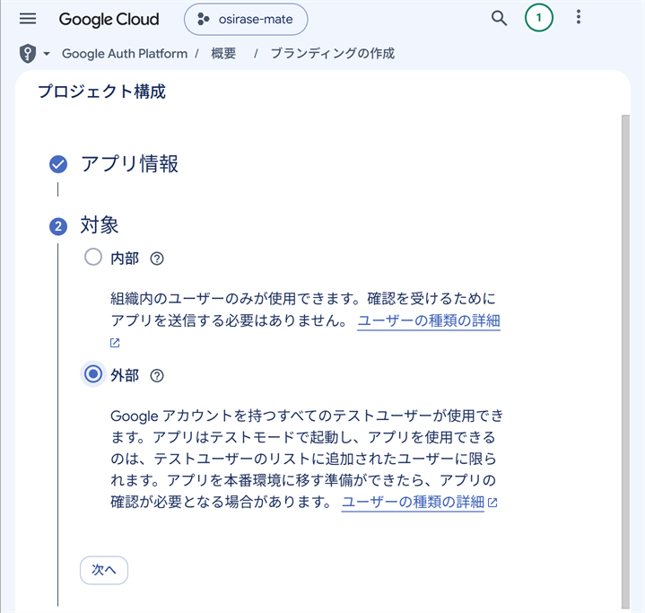
- 連絡先情報：自分のメールアドレスを入力して 次へ を押します。
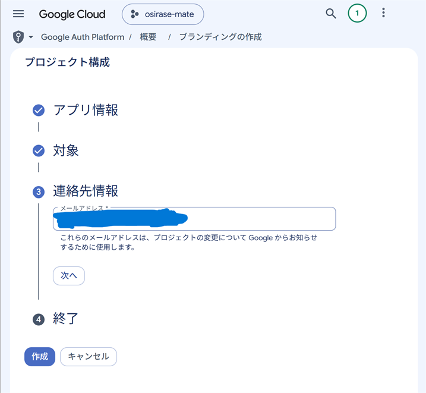
- 終了：「Google API サービス: ユーザーデータに関するポリシー」に同意するチェックを入れて 続行 を押し、下の 作成 を押します。
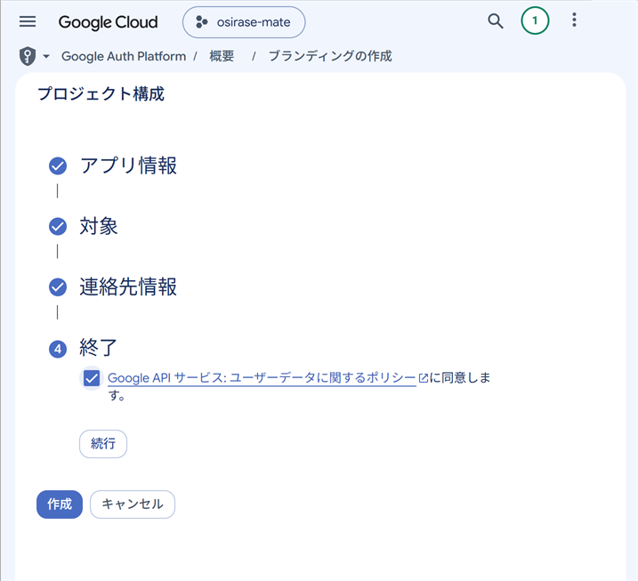
- 「OAuth の概要」の画面になれば作成できています。
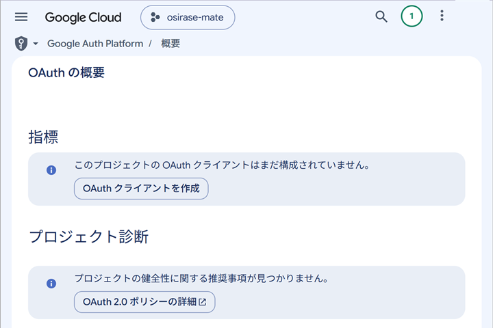
- テストユーザーに自分を追加する：B の手順 2 の 対象 を押します（左のメニューの「対象」でも開けます）。公開ステータスが「テスト中」になっていることを確かめ、下の方の テストユーザー の Add users を押します（日本語の画面でもこのボタンは英語です）。
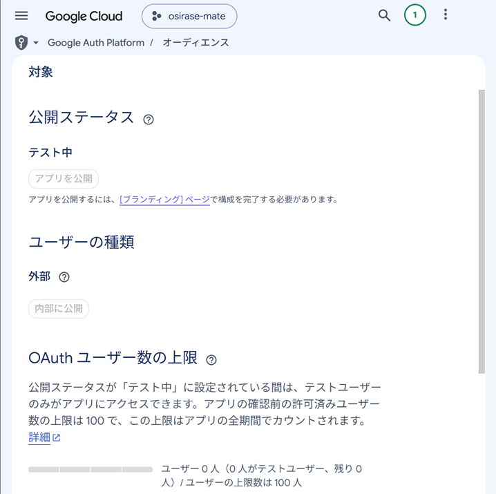
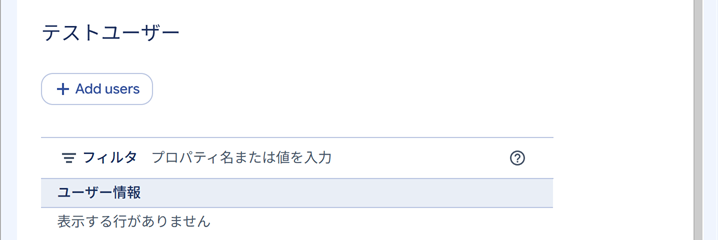
- 通知を受け取りたい Google アカウントのメールアドレスを入力して 保存 を押します。一覧に自分のアドレスが出れば完了です。
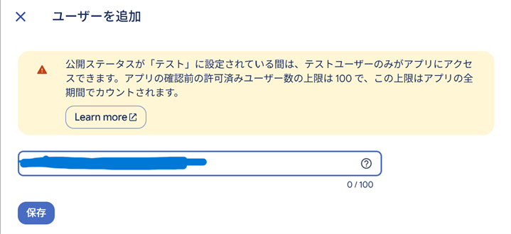
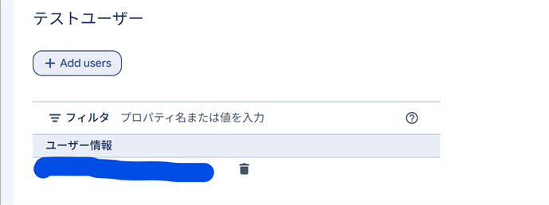
- 「アプリを公開」は押せなくてかまいません（テストのまま使います）。
手順 3. クライアントを作り、JSON をダウンロードする
- B の手順 3 の 開く を押します（クライアントの作成ページが開きます。「OAuth の概要」の OAuth クライアントを作成 からも開けます）。
- アプリケーションの種類は 「デスクトップ アプリ」 を選び、名前（例：
oshirase-mate）を付けて 作成 を押します。 -
作成直後に表示される画面で JSON をダウンロード を押します。
client_secret_〜.jsonという名前のファイルが「ダウンロード」フォルダに保存されます。クライアント シークレットは、この画面でしか表示・ダウンロードできませんGoogle は、新しいクライアントのシークレットを作成直後にしか見せません。あとからクライアントの詳細画面でダウンロードした JSON にはシークレットが入っていないため、読み込めません。ダウンロードせずに閉じてしまったときは、クライアントの一覧からそのクライアントを削除し、作り直してください。JSON ファイルとシークレットは他人に見せないでください（チャットやスクリーンショットに貼らない）。
手順 4. ダウンロードした JSON を読み込む
- B の手順 4 の ファイルを選ぶ で
client_secret_〜.jsonを選ぶか、エクスプローラーからファイルを手順 4 の枠にドラッグ＆ドロップします。 -
読み込めると手順 4 に ✓ が付き、上の クライアント が 「読み込み済み（自分で作ったもの）」 になります。
- 値は暗号化してこの PC 内に保存されます。読み込んだ後の JSON ファイルは削除してかまいません。
- 「種類が『ウェブ アプリケーション』です」と出たら、手順 3 で種類を「デスクトップ アプリ」にして作り直します。
- 「クライアント シークレットが入っていません」と出たら、手順 3 の注意のとおり、クライアントを作り直して作成直後の画面でダウンロードします。
手順 5. 連携する
B の手順 5 の 連携する を押し、上の 「連携する」 のとおりに進めます。テストユーザーに追加したアカウントを選んでください。
7 日ごとに連携し直す
- 設定タブの Googleアカウント連携 欄に、連携が切れる日時が表示されます。
- 切れる前日になるとマスコットが「Google との連携がもうすぐ切れるよ」とお知らせし、右クリックメニューに Google と連携し直す… が出ます。押すと設定タブが開くので、連携し直す を押し、「連携する」 と同じように同意します（通知はその間も止まりません）。
- 切れてしまったときは、マスコットが「Google との連携が切れちゃった」とお知らせします。設定タブの 連携する で連携し直してください。切れていた間に届いた重要メールは、連携し直したときにまとめてお知らせします（新しいものから最大 10 件）。
補足：本番環境にして 7 日の期限をなくす
Google Auth Platform の 対象 で アプリを公開 を押して「本番環境」にすると、連携は 7 日で切れなくなります。ただし公開するには、ブランディング でアプリのホームページとプライバシーポリシーの URL などを入力する必要があります（自分で公開できるページが必要です）。審査は受けなくても使えますが、連携のときの「確認されていません」の警告は出たままです。
本番環境にしたら、アプリにもそのことを伝えるため、設定タブの 連携解除 → Google 連携 タブの A の手順 1 の ファイルを選ぶ で同じ JSON を読み込み直す → 連携する の順に操作してください（期限のお知らせが出なくなります）。
3. VOICEVOX（読み上げ。任意）
通知・アイドルトーク・チャットの読み上げには、無料の音声合成ソフト VOICEVOX を使います。VOICEVOX は本アプリに含まれていません。使う場合は各自でインストールしてください。入れなくても、読み上げ以外の機能はすべて使えます。
-
設定画面の ボイス（VOICEVOX） 欄の VOICEVOX を入手 を押すと（または VOICEVOX 公式サイト）公式サイトが開くので、ダウンロードしてインストールします。
GPU 版（DirectML）を推奨しますCPU 版では1件の読み上げの準備に10秒以上かかることがあり、読み上げが遅れたり間に合わなかったりします（GPU 版では1秒未満の実績があります）。
-
VOICEVOX を起動します（本アプリより先でも後でもかまいません）。
- 本アプリは
localhost:50021（VOICEVOX の標準の設定）に接続します。VOICEVOX の設定でポートを変えている場合は使えません。
- 本アプリは
- 本アプリの設定画面の ボイス（VOICEVOX） 欄が 「接続中」 になれば準備完了です。「VOICEVOX未検出」のときは VOICEVOX を起動してから 再確認 を押します。
- キャラクターごとの声（話者・話速・音高）は、右クリック → キャラクター変更 → 各キャラクターの 編集 で選べます（VOICEVOX の起動中のみ選択できます）。
4. Gemini API キー（チャット「話しかける」。任意）
マスコットと会話する「話しかける」機能には、Google の Gemini API キーが必要です。
- 設定画面の チャット（Gemini） 欄の API キーを取得 を押して（または Google AI Studio）、Google アカウントでログインします。
- API キーを作成 を押し、表示されたキーをコピーします。
-
本アプリの設定画面の チャット（Gemini） 欄に貼り付けて 保存 を押します。
- キーは暗号化してこの PC 内に保存されます。
- 保存すると、右クリックメニューの 話しかける が使えるようになります。
API キーを保存すると、キャラクターの編集画面の Gemini でセリフを作る も使えるようになります（キャラクターの性格に合わせて、お知らせの読み上げ・アイドルトーク・チャットの終わりの言葉の案を作ります。案は 保存 を押すまで反映されません）。
5. 困ったとき
| 症状 | 対処 |
|---|---|
| 「連携する」が押せない／「設定が必要です」と表示される | クライアントがまだ読み込まれていません。Google 連携 タブの A か B の手順で読み込んでください。 |
| JSON を読み込むと「クライアント シークレットが入っていません」と出る | 作成後に詳細画面からダウンロードした JSON です。2-B の手順 3 でクライアントを作り直し、作成直後の画面でダウンロードしてください。 |
| 連携すると「クライアントが Google に受け付けられませんでした」と出る | 受け取ったクライアントの場合は、貼り付けた値が正しいか確かめ、だめなら送ってくれた人に確認してください。自分で作った場合は、Google Cloud でクライアントを削除した・別のプロジェクトのものを読み込んだ可能性があります。2-B の手順 3・手順 4 をやり直してください。 |
| 連携のときに「アクセスをブロック」「このアプリは現在テスト中です」などと出る | 自分で作った場合は、2-B の手順 2 で、連携するアカウントをテストユーザーに追加したか確認してください。受け取ったクライアントの場合は、送ってくれた人に連絡してください（利用者数の上限に達していることがあります）。 |
| 「必要な権限がすべて許可されませんでした」と出る | 「連携する」 の手順 3 のとおり、すべての項目にチェックを入れて連携し直してください。 |
| 7日ほどで「連携の有効期限が切れました」と出る | 自分で作ったクライアント（テスト中のアプリ）では、Google の決まりで 7 日ごとに切れます。連携し直してください。期限をなくすには 補足 を参照してください。 |
| 通知が来ない | 設定画面で「連携中」になっているか確認してください。重要メールは最大約1分、予定・TODO は更新から最大約5分で取り込まれます。 |
| 「VOICEVOX未検出」と出る／読み上げされない | VOICEVOX を起動して「再確認」を押してください。ミュート中・ボイス音量0%のときも読み上げません。 |
| シアン・シトロンが VOICEVOX なしで話さない | 声（話者・話速・音高）を変えていると、録音してある声は使いません。キャラクターの編集画面の「同梱の状態に戻す」で元の声に戻ります。 |
| 読み上げが遅い・途中から読まれない | VOICEVOX の GPU 版をお使いください（3 の手順1）。1件の準備に20秒以上かかる場合は読み上げを省略します。 |
| 「インターネットにつながらないみたい」と出る | ネットワークが戻ると自動で再開します。 |
設定・ログの保存先：%APPDATA%\おしらせメイト（ログは logs\ に14日分）。不具合を伝えるときはログを添えてください（ログに Client Secret・トークン・API キーは記録されません）。
クレジット
- VOICEVOX：読み上げに VOICEVOX を使用しています（本アプリには同梱していません）。使用する音声ライブラリのクレジット（「VOICEVOX:話者名」）は設定画面のボイス欄に表示されます。
- 同梱キャラクターの声：「シアン」「シトロン」の録音してある声は、VOICEVOX で事前に合成したものです（VOICEVOX:ずんだもん、VOICEVOX:四国めたん）。
- EmoteLab：同梱キャラクター（シアン・シトロン）の画像は EmoteLab とその内蔵アセットを使用して作成しています。自分で EmoteLab で作成したキャラクターを公開・配布する場合も、EmoteLab を使用した旨のクレジット表記が必要です（EmoteLab EULA）。EmoteLab 本体は本アプリに含まれません。